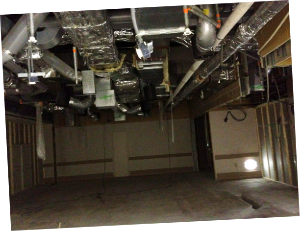
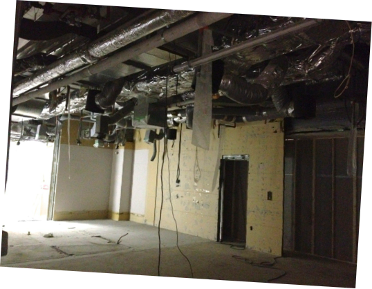
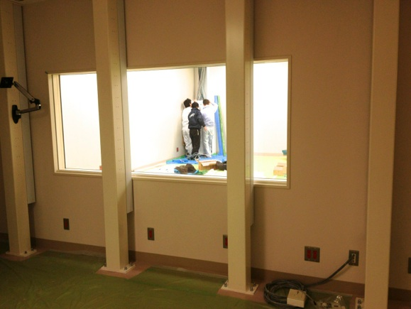
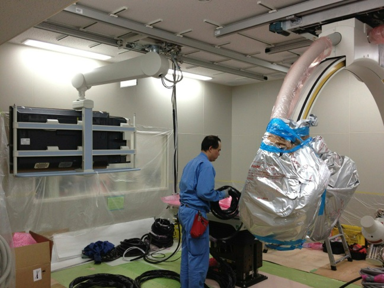
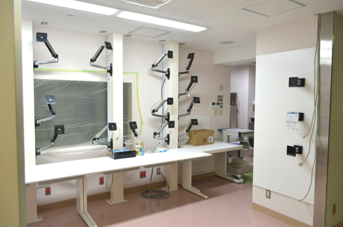

カテ室五番ができるまで (2012/1〜3月)
カテーテル検査室「カテ室五番」ができるまで2012/1 〜 3月


もともと手術室のベット置き場だったスペースと，カテ室の更衣室，シャワー室だった場所をつぶして，新しいカテーテル検査室のスペースを作りました．
天井は手術室へのダクトが入り乱れていて，非常に複雑な構造になっており，アンギオ装置をどの場所に天吊りするかなど，天井の設計には大きく影響しました．


患者さんが出入りする扉ができてきました．
天井にはほとんどスペースがなく，すごいことになっています．


操作室です．カテ室内とのケーブルが無数にのびてきています．
カテ室内の天井がようやくおさまってきました．
何もないと結構大きな空間です．


操作室の天井もふさがり，形ができてきました．

今回のカテ室の大きな特徴は，操作室のモニターを床置きにしないこと．
そのために，操作室に４本の太い柱を配置しました．柱の中に，ディスプレーケーブル，電源ケーブルを配線し，モニターを自由に配置できるように設計しています．
オクラホマ大学のアブレーションカテーテル検査室を参考にしました．

いよいよアンギオ装置が搬入されました．
ドイツから空輸されてきたシーメンス社の装置です．
56インチモニターも天吊りされましたが，反対側を向いていてまだ全容をみることができません．
アンギオ装置の搬入を初めて見ましたが，すごく複雑で精密な機械であることがうかがえます．
こんな状態のアンギオ装置は初めて見ました．


モニターのアームが取り付けられました．
その異様な光景に，千手観音のようだという意見も．．．

右の柱には，見学者用モニターとして3面のモニターを設置予定です．
モニターが取り付けられるのが楽しみです．

音響システムについては，ヨドバシカメラで試聴して選びました，Boseの天井埋め込み型スピーカーをカテ室内と操作室に2セット設置して，マランツのミニコンポのアンプで鳴らしています．
となりに同じ形をした業務用スピーカーが配置されていて，小さなロゴでしか区別ができず地味な感じですが，なかなかいい音を鳴らしてくれています．